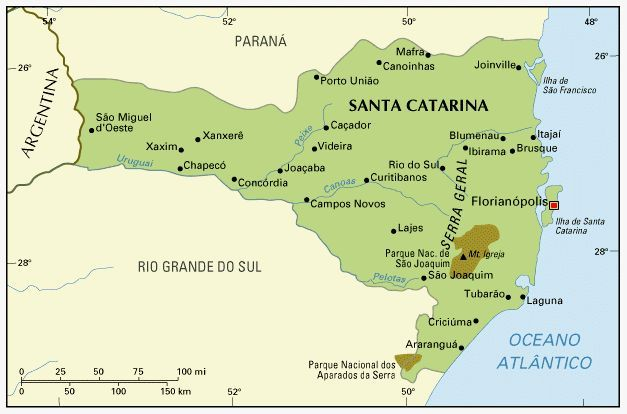
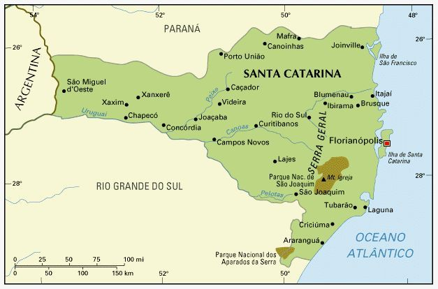

A cartografia do Rio Grande do Sul possui grande variedade tanto geológica quanto topógrafa, por conta de suas paisagens temos uma cartografia avançada
Santa Catarina por ter um dos maiores IDhs do Brasil possui mapas temáticos evoluidos com dados concretos e atualizados sobre: população,renda,fome etc.
No Paraná a improtância da cartografia se da pela valorização da cultura regional, como as indigenas. Porem infelizmente sua cartografia é uma das menos avançadas do país
 
